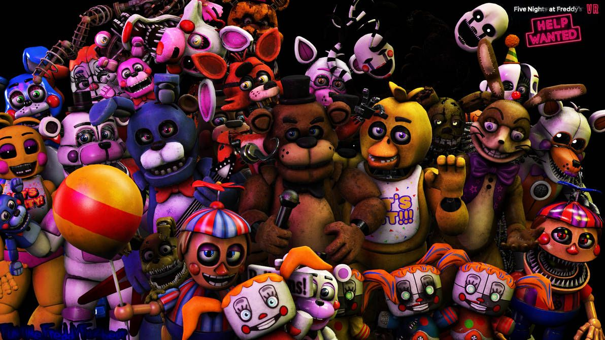
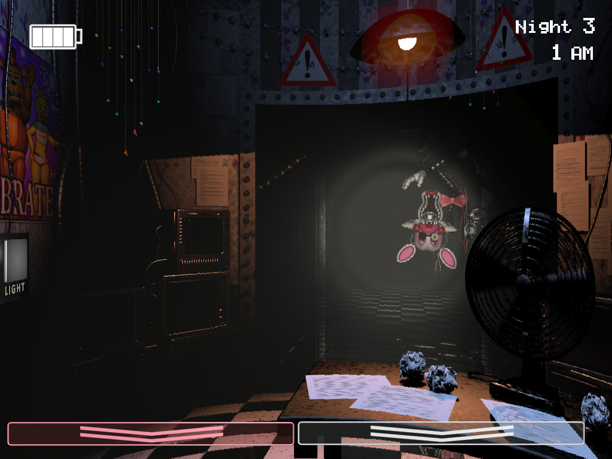
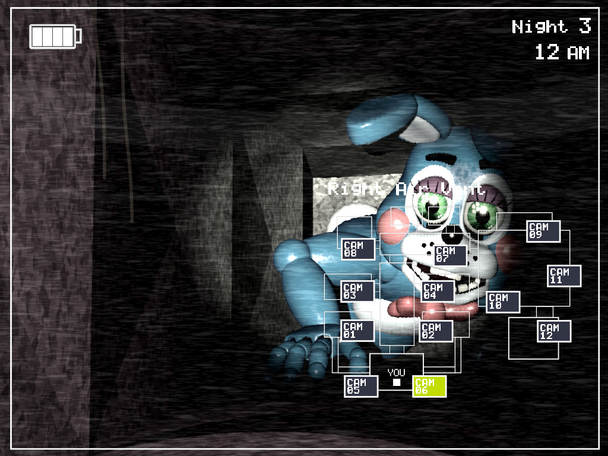

.jpg)


🎮 Five Nights at Freddy's 2 (Jogo) Desenvolvedor e Editor: Scott Cawthon (Jogo independente). Lançamento: 10 de novembro de 2014 (para Microsoft Windows), com versões lançadas logo depois para Android, iOS e outros consoles. Gênero: Survival Horror, Point-and-Click. Cronologia: Apesar de ser o segundo jogo lançado, a história de FNAF 2 é uma prequela, ou seja, se passa antes dos eventos do primeiro jogo (FNAF 1).


.jpg)
🕹️ Jogabilidade
Você assume o papel de um novo guarda noturno, Jeremy Fitzgerald (e depois Fritz Smith na Custom Night), trabalhando no turno das 12h às 6h da manhã. A jogabilidade é alterada em relação ao primeiro jogo: Sem Portas de Segurança: Sua sala não tem portas que possam ser fechadas, o que aumenta a tensão. Nova Defesa: A Máscara de Freddy Fazbear: Para se proteger da maioria dos animatrônicos, você deve rapidamente colocar uma máscara de Freddy quando eles entrarem no seu escritório. Eles "pensam" que você é outro animatrônico e vão embora. A Lanterna: Você tem uma lanterna que pode ser usada nos corredores e nos dutos de ventilação, mas a energia é limitada. The Puppet (Marionete): Um novo e crucial animatrônico que é mantido à distância através de uma caixa de música que deve ser rebobinada constantemente através das câmeras de segurança. Se a música parar, ele sairá para te atacar. Dois Grupos de Animatrônicos: Você enfrenta os animatrônicos antigos e danificados ("Withered" Animatronics) e os novos e aprimorados ("Toy" Animatronics).
📜 História e Enredo
Local: O jogo se passa em uma nova e aprimorada versão da pizzaria Freddy Fazbear's Pizza, que está sob investigação devido a incidentes anteriores. Animatrônicos: A pizzaria utiliza os novos modelos "Toy" (Toy Freddy, Toy Bonnie, Toy Chica, Mangle), além de versões danificadas dos animatrônicos originais (Withered Freddy, etc.) e novos personagens como o Puppet e Balloon Boy. A Mordida de '87: Embora não seja explicitamente mostrada, o jogo se passa no ano de 1987 e insinua fortemente a ocorrência da famosa "Mordida de '87", um evento trágico mencionado no primeiro jogo. Mini-games: Entre as noites, você pode ser levado a mini-games de estilo Atari que fornecem pistas importantes sobre a história de fundo, incluindo os assassinatos de crianças e a origem do Puppet.
🎬 Five Nights at Freddy's 2 (Filme)
Devido ao grande sucesso do primeiro filme, uma sequência cinematográfica baseada nos eventos deste jogo está em produção: Lançamento no Brasil: 4 de dezembro de 2025. Direção: Emma Tammi. Elenco: Conta com o retorno de atores principais como Josh Hutcherson (Mike Schmidt), Matthew Lillard (William Afton) e Elizabeth Lail (Vanessa Shelly).